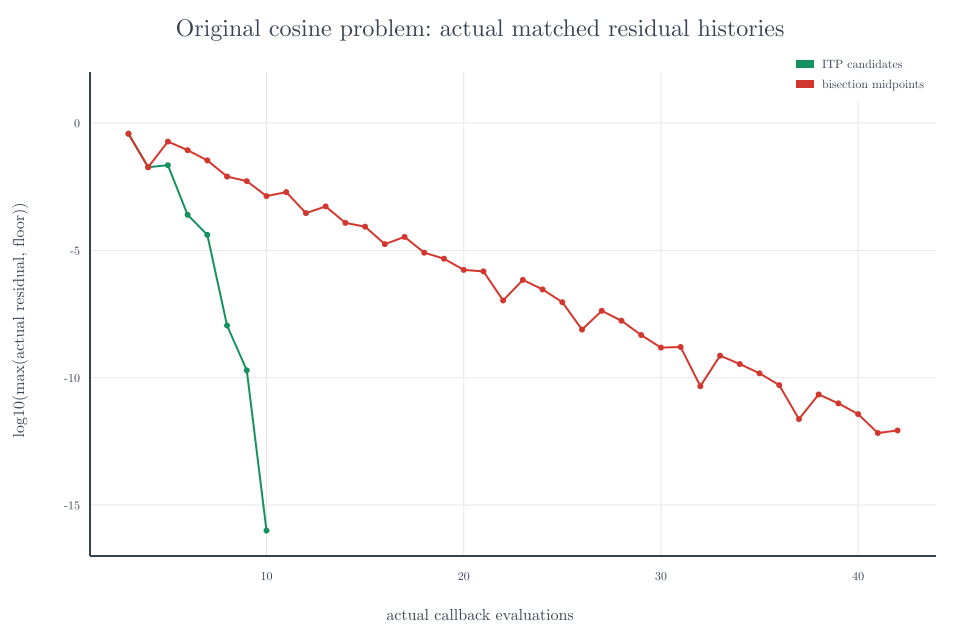
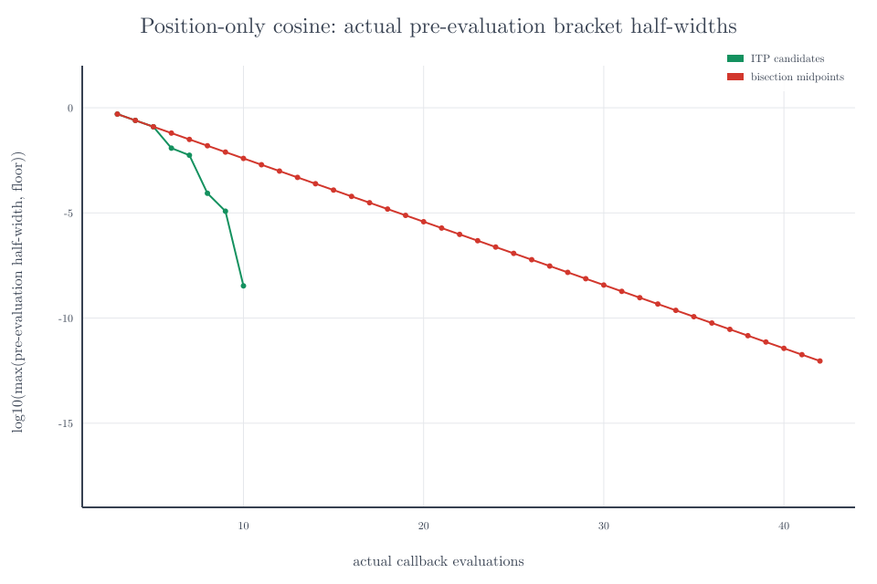
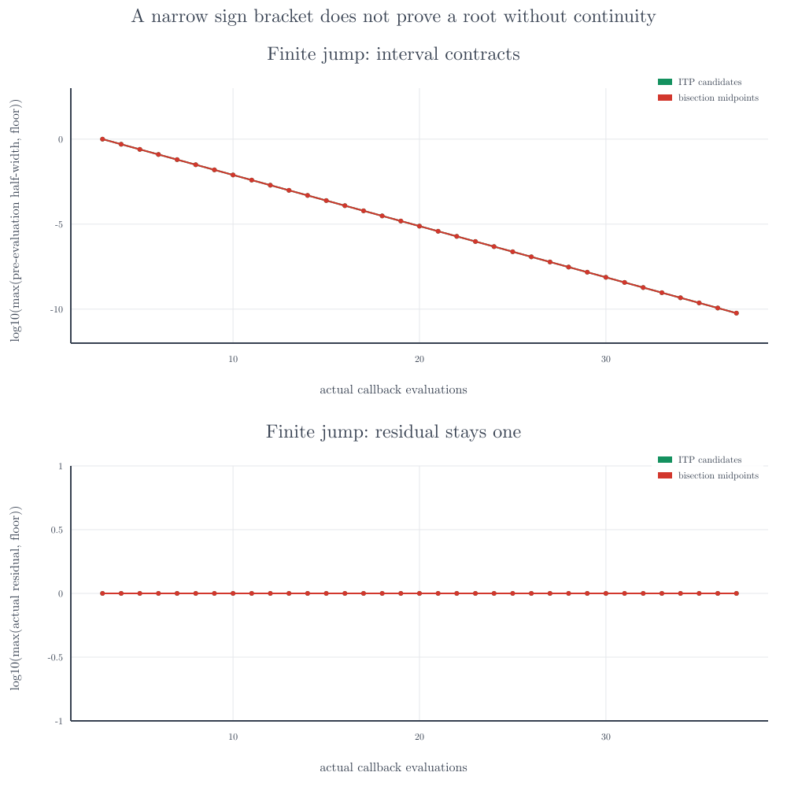

ITP: Actual Interpolation, Truncation and Projection
Abstract
Find a zero of a continuous scalar function from a sign-changing bracket while controlling how many interval reductions may be needed. ITP combines an interpolated guess with truncation and a projection that limits the worst-case bracket width. We record all three stages from one executing solver, retain the original cosine fixed-point example, and separate position tolerance from function residual. The default n0=1 allows one extra worst-case trial; only n0=0 matches bisection's exact-arithmetic worst-case bound.
A three-number example before the general rule
For f(x)=x cubed minus two on [0,2], endpoint values are −2 and six. The secant interpolation gives 0.5. The midpoint is one and the truncation amount is 0.2 times width squared divided by initial width, or 0.4, so the truncated guess is 0.9. Set coordinate tolerance to 0.125 and n0=0: three halvings suffice in the bisection bound, and the first projection radius is 0.125 times eight minus one, which is zero. The actual evaluated coordinate is therefore one. The diagram reads that recorded trial; no report-only implementation recomputes it.
#include <dm/dm.hpp>
int main() {
std::filesystem::create_directories("build");
const auto t = dm::algorithms::itp_trace([](double x) {
return x * x * x - 2;
}, 0, 2, {.125, 0, 100, 0});
std::print("| trial | interpolate | delta | truncate | projection radius | actual x | f(x) |\n| ---: | " "---: | ---: | ---: | ---: | ---: | ---: |\n");
for (const auto &s : t.steps)
if (s.projected)
std::print("| {} | {:.8f} | {:.8f} | {:.8f} | {:.8f} | {:.8f} | {:.8f} |\n",
s.iteration, s.interpolated, s.delta, s.truncated,
s.projection_radius, s.x, s.f_x);
std::print("Final root {:.8f}, stop {}, coordinate radius {:.8f}, projection trials {}, callbacks {}.\n",
t.run.result.root, dm::algorithms::itp_stop_name(t.run.stop),
t.run.radius, t.run.result.iterations, t.run.evaluations);
dm::algorithms::itp_stage_diagram(t).save_svg("build/itp_tiny.svg");
}| trial | interpolate | delta | truncate | projection radius | actual x | f(x) |
|---|---|---|---|---|---|---|
| 1 | 0.50000000 | 0.40000000 | 0.90000000 | 0.00000000 | 1.00000000 | -1.00000000 |
| 2 | 1.14285714 | 0.10000000 | 1.24285714 | 0.00000000 | 1.50000000 | 1.37500000 |
| 3 | 1.21052632 | 0.02500000 | 1.23552632 | 0.00000000 | 1.25000000 | -0.04687500 |
Final root 1.37500000, stop interval, coordinate radius 0.12500000, projection trials 3, callbacks 6.
Derive interpolation and truncation
Assume finite opposite nonzero endpoint values, a<b, continuity and trustworthy function signs. The line through the endpoints crosses zero at
The implementation scales the magnitudes before forming their ratio, then uses wide arithmetic for positions. This avoids double cross-products and the sum of huge callback magnitudes. It changes arithmetic ordering from the old formula, so last digits or trial counts are not promised identical at rounded boundaries.
Let m be the bracket centre and w its width. This implementation fixes kappa2=2 and kappa1=0.2 divided by the initial width. Truncation moves toward the centre without overshooting it:
The code evaluates delta as 0.2*w*(w/w0), avoiding an unnecessary square and reciprocal at extreme scales. This is a fixed scaled parameter policy, not a general interface to every parameter choice studied in the literature.
Derive the projection bound and the allowance
For positive coordinate tolerance epsilon, define the nonnegative bisection halving count and the allowed projection count:
The code obtains the first count by checked repeated halving, avoiding a logarithm followed by an unchecked conversion to int. At zero-based trial j, project the truncated estimate into the feasible band around the centre:
Intersecting that band with the bracket is equivalent to capping its radius at half-width. In exact arithmetic, either retained child has width at most w/2+abs(xITP−m), which is at most epsilon times 2 to the power N−j. Inductively, the radius stays nonnegative and the bracket after N trials is no wider than two epsilon. With n0=0 this is bisection's worst-case halving bound; the default n0=1 permits one extra trial. It does not promise fewer calls than bisection on every function: bisection may hit a callback zero immediately.
Finite precision adds qualifications. The code rounds the actual coordinate to double, falls back to an interior midpoint if rounding hits an endpoint, and marks trials whose rounding required adjustment or left the wide projection band. If no interior midpoint exists, it reports stagnation. If the computed allowance expires before the actual returned midpoint radius passes tolerance, it reports projection limit with converged=false. These are numerical outcomes, not certified directed-rounding interval bounds.
The maintained ITP package documentation records the n0 allowance and separate width criterion. Its reference implementation shows the three stages. The original method is Oliveira and Takahashi, ACM TOMS47(1), article5, 2021. This report derives the width bound above rather than asserting an unconditional superlinear rate. Local rate claims require smoothness/simple-root and parameter assumptions, and are not inferred from one plotted trajectory.
Retain the original cosine fixed point and match the stopping controls
The original problem is cos(x)−x on [0,1], with root approximately 0.7390851332151607. Its summary used combined tolerance 1e-12, while its report-only comparison loops used position tolerance 1e-12 and residual threshold 1e-13. We preserve those as two explicitly different experiments. The comparison now calls the canonical ITP and bisection traces with the same two thresholds. All candidate values come from their producing loops; there are no hand-coded solver loops or repeated-prefix reruns. The horizontal axis counts actual callbacks, including the two endpoints, rather than comparing unlike iteration units.
#include <dm/dm.hpp>
int main() {
std::filesystem::create_directories("build");
const auto f = [](double x) { return std::cos(x) - x; };
const auto summary = dm::algorithms::itp_run(f, 0, 1, {1e-12, 1e-12});
const auto a = dm::algorithms::itp_trace(f, 0, 1, {1e-12, 1e-13});
const auto b =
dm::algorithms::bisection_trace(f, 0, 1, {1e-12, 1e-13, 100});
std::print("| experiment | root | residual | projection or midpoint trials | callback calls | stop |\n| " "--- | ---: | ---: | ---: | ---: | --- |\n");
std::print("| original combined summary | {:.15f} | {:.8e} | {} | {} | {} |\n",
summary.result.root, summary.result.residual,
summary.result.iterations, summary.evaluations,
dm::algorithms::itp_stop_name(summary.stop));
std::print("| matched ITP comparison | {:.15f} | {:.8e} | {} | {} | {} |\n",
a.run.result.root, a.run.result.residual,
a.run.result.iterations, a.run.evaluations,
dm::algorithms::itp_stop_name(a.run.stop));
std::print("| matched bisection comparison | {:.15f} | {:.8e} | {} | {} | {} |\n",
b.result.root, b.result.residual, b.result.iterations,
b.evaluations, dm::algorithms::bisection_stop_name(b.stop));
dm::algorithms::itp_bisection_plot(a, b, true, 1e-16).title(
"Original cosine problem: actual matched residual histories").ylim(
-17, 2).save_svg("build/itp_original.svg");
}| experiment | root | residual | projection or midpoint trials | callback calls | stop |
|---|---|---|---|---|---|
| original combined summary | 0.739085133215161 | 0.00000000e+00 | 8 | 10 | zero callback |
| matched ITP comparison | 0.739085133215161 | 0.00000000e+00 | 8 | 10 | zero callback |
| matched bisection comparison | 0.739085133215667 | 8.47655279e-13 | 40 | 42 | interval |

Check interval geometry separately from small residuals
For a position-only experiment set residual_tolerance=0. Callback zeros still stop, because their actual computed value is zero. The next figure compares pre-evaluation half-widths on the same cosine problem; these are not candidate radii when a projected point lies off centre. The returned run radius is the maximum distance from its actual estimate to either endpoint.
We also scan six coordinate tolerances, both n0 settings and four fixed sign-transition locations in [0,1]. Their callbacks return only −1 and +1, so there is no callback zero or residual acceptance to hide interval work. These finite discontinuous controls test bracket geometry and trial budgets; they have no mathematical root, so they are not examples of root existence. Observed maxima over four locations are a bounded control, not an exhaustive worst-case proof; that role belongs to the projection argument above.
#include <dm/dm.hpp>
int main() {
std::filesystem::create_directories("build");
std::print("| tolerance exponent k | n0 | theoretical allowance | maximum trials over four locations | " "projection-limit stops |\n| ---: | ---: | ---: | ---: | ---: |\n");
for (int k : {6, 12, 18, 24, 30, 36})
for (int n0 : {0, 1}) {
int maximum = 0, limited = 0, bound = 0;
for (double location : {.031, .173, .731, .971}) {
const auto r = dm::algorithms::itp_run([location](double x) {
return x < location ? -1. : 1.;
}, 0, 1, {std::ldexp(1., -k), 0, 100, n0});
maximum = std::max(maximum, r.result.iterations);
bound = r.projection_bound;
limited += r.stop == dm::algorithms::ItpStop::ProjectionLimit;
if (r.result.iterations > bound)
throw std::runtime_error("projection allowance violated");
}
std::print("| {} | {} | {} | {} | {} |\n", k, n0, bound, maximum, limited);
}
const auto f = [](double x) { return std::cos(x) - x; };
const auto a = dm::algorithms::itp_trace(f, 0, 1, {1e-12, 0});
const auto b =
dm::algorithms::bisection_trace(f, 0, 1, {1e-12, 0, 100});
std::print("Position-only cosine: ITP {} projection trials and {} callbacks; bisection {} midpoint " "trials and {} callbacks.\n",
a.run.result.iterations, a.run.evaluations,
b.result.iterations, b.evaluations);
dm::algorithms::itp_bisection_plot(a, b).title("Position-only cosine: actual pre-evaluation bracket half-widths").ylim(-19, 2).save_svg("build/itp_width.svg");
}| tolerance exponent k | n0 | theoretical allowance | maximum trials over four locations | projection-limit stops |
|---|---|---|---|---|
| 6 | 0 | 5 | 5 | 0 |
| 6 | 1 | 6 | 5 | 0 |
| 12 | 0 | 11 | 11 | 0 |
| 12 | 1 | 12 | 11 | 0 |
| 18 | 0 | 17 | 17 | 0 |
| 18 | 1 | 18 | 17 | 0 |
| 24 | 0 | 23 | 23 | 0 |
| 24 | 1 | 24 | 23 | 0 |
| 30 | 0 | 29 | 29 | 0 |
| 30 | 1 | 30 | 29 | 0 |
| 36 | 0 | 35 | 35 | 0 |
| 36 | 1 | 36 | 35 | 0 |
Position-only cosine: ITP 8 projection trials and 10 callbacks; bisection 40 midpoint trials and 42 callbacks.

Here ITP stops on a computed callback zero while its last pre-evaluation half-width remains above 1e-12. The zero-callback stopping reason, rather than an interval certificate, explains why that green curve ends there.
Controls: units, discontinuity and precision
A small residual alone need not locate a root accurately. Scale a linear function by 1e-20: a combined function/coordinate tolerance accepts a point in a wide bracket, while the position-only run continues. A finite jump can meet the interval test with residual one despite having no zero. Finally, adjacent doubles near one cannot contain an interior double; asking for a subnormal coordinate tolerance reports stagnation, rather than repeating an endpoint. A second precision control starts at one with a five-ulp bracket and tolerance three quarters of an ulp. Its second projected centre falls between doubles; the rounded trial leaves a two-ulp bracket after its two allowed trials, so the solver reports projection limit with converged=false. The last figure shows the jump control's shrinking interval and constant actual residual side by side, using matched position-only controls for both solvers.
#include <dm/dm.hpp>
int main() {
std::filesystem::create_directories("build");
const auto scaled = [](double x) { return 1e-20 * (x - .731); };
const auto combined = dm::algorithms::itp_run(scaled, 0, 2, {1e-10, 1e-10});
const auto positional = dm::algorithms::itp_run(scaled, 0, 2, {1e-10, 0});
const auto jump = [](double x) { return x < .731 ? -1. : 1.; };
const auto a = dm::algorithms::itp_trace(jump, 0, 2, {1e-10, 0});
const auto b = dm::algorithms::bisection_trace(jump, 0, 2, {1e-10, 0, 100});
const auto stalled = dm::algorithms::itp_run([](double x) {
return x == 1 ? -1. : 1.;
}, 1, std::nextafter(1., 2.), {std::numeric_limits<double>::denorm_min(), 0});
const double ulp = std::nextafter(1., 2.) - 1.;
const auto rounded = dm::algorithms::itp_run([ulp](double x) {
return x < 1 + 3 * ulp ? -1. : 1.;
}, 1, 1 + 5 * ulp, {.75 * ulp, 0, 100, 0});
std::print("| control | converged flag | returned root | absolute residual | candidate radius | stop " "|\n| --- | --- | ---: | ---: | ---: | --- |\n");
for (const auto & [name, r] : std::vector<std::pair<std::string, dm::algorithms::ItpRun>> {
{
"scaled linear combined", combined
}, {"scaled linear positional", positional}, {"finite jump", a.run}, {
"adjacent doubles", stalled
}, {"rounded projection allowance", rounded}
})
std::print("| {} | {} | {:.15f} | {:.8e} | {:.8e} | {} |\n", name,
r.result.converged, r.result.root, r.result.residual,
r.radius, dm::algorithms::itp_stop_name(r.stop));
bool nonfinite = false, record_cap = false;
int callbacks = 0;
try {
(void) dm::algorithms::itp_run([](double) {
return std::numeric_limits<double>::infinity();
}, 0, 1);
} catch (const std::domain_error &) {
nonfinite = true;
}
try {
(void) dm::algorithms::itp_trace([&](double x) {
++callbacks; return std::cos(x) - x;
}, 0, 1, {1e-12, 0, 100, 1, 1});
} catch (const std::length_error &) {
record_cap = true;
}
std::print("Nonfinite callback rejected: {}. One-record cap rejected before the next callback: {}; " "actual calls {}.\n",
nonfinite, record_cap, callbacks);
if (!nonfinite || !record_cap || callbacks != 3)
throw std::runtime_error("control mismatch");
auto width =
dm::algorithms::itp_bisection_plot(a, b).title("Finite jump: interval contracts").ylim(-12, 3);
auto residual =
dm::algorithms::itp_bisection_plot(a, b, true).title(
"Finite jump: residual stays one").ylim(-1, 1);
auto layout = dm::graphics::RLayout::create(2, 1);
layout.add(width).add(residual).size(1000, 1000).title(
"A narrow sign bracket does not prove a root without continuity").fit_panels().save_svg("build/itp_controls.svg");
}| control | converged flag | returned root | absolute residual | candidate radius | stop |
|---|---|---|---|---|---|
| scaled linear combined | true | 1.000000000000000 | 2.69000000e-21 | 1.00000000e+00 | residual |
| scaled linear positional | true | 0.731000000025073 | 2.50733878e-31 | 2.50764964e-11 | interval |
| finite jump | true | 0.730999999970663 | 1.00000000e+00 | 5.82076609e-11 | interval |
| adjacent doubles | false | 1.000000000000000 | 1.00000000e+00 | 2.22044605e-16 | stagnation |
| rounded projection allowance | false | 1.000000000000001 | 1.00000000e+00 | 2.22044605e-16 | projection limit |
Nonfinite callback rejected: true. One-record cap rejected before the next callback: true; actual calls 3.

Counts, ownership and numerical scope
Each actual projection trial evaluates f once. Initial endpoint evaluation stops immediately if the first endpoint callback is zero; otherwise both endpoints are evaluated. A terminal midpoint is an additional callback when the width, caller budget, projection budget or precision stops the trial loop. It does not increment the projection-trial count. Endpoint calls are not step records; every actual projected or terminal-midpoint candidate call has a scalar snapshot. The stable stopping reason identifies which criterion actually passed or failed. A callback zero is a floating computation, not proof of an exact mathematical zero. Residual acceptance is strict; coordinate acceptance is non-strict for the actual returned midpoint radius.
Time is O(K plus the initial halving-count work), plus at most K+3 callback calls, for K permitted projection trials. Untraced runs use constant auxiliary storage; traces own O(K) scalar records. There is no derivative evaluation, function replay, prefix rerun or retained callable. Callback exceptions propagate and their already-executed side effects persist. Independent calls share no mutable library state.
Finite ordered/reversed endpoints and positive finite coordinate tolerance are validated, as are nonnegative finite residual tolerance, trial budget and n0. The n0 addition is checked before callbacks. Nonfinite callback values throw; callback-sign comparisons do not multiply values. Working arithmetic uses long double, with platform-dependent range/precision; unrepresentable arithmetic throws. Large slack exponents are handled without overflowing a needless power. No arbitrary smoothness, monotonicity, continuity or evaluation-accuracy property can be inferred from finite callback values.
The default online history cap is one million scalar candidate records, admitted before each recorded candidate callback; zero disables it, and untraced runs ignore it. No partial history returns on an error. This excludes endpoint calls, vector capacity, callback-owned storage and byte/peak RAM. Graphics apply a separate complete combined point cap before building plot data, validate the shown scalars and callback-count contract, and do not establish the provenance of an edited history or verify that two caller-supplied callbacks were identical. Figures explicitly transform values with log10(max(value,declared floor)); a floor point is a display choice, not additional accuracy.
The legacy itp signature and RootResult layout remain available. It delegates to the same kernel with tol applied in both coordinate and function units, n0=1 and no recording. Zero trial budget still evaluates endpoints and a final midpoint where needed; invalid negative budgets now throw. Unlike the old code, invalid logarithm/int conversions, nonfinite evaluations and rounded precision limits cannot silently claim an ordinary successful solve.
Verification
Twelve selected native cases pass AddressSanitizer and UndefinedBehaviorSanitizer, including 2432 generated sign-transition brackets, all recorded stage and bracket updates, exact callback sequences, separate-unit controls, endpoint/no-bracket/ zero-budget outcomes, extreme scales, cap admission, ownership, graphics and an explicit rounded-projection failure. Three existing scalar-root test cases also pass within that selected suite. Independent 90-digit Decimal checks cover 623 runs, 12546 actual projection trials and 615 actual final-midpoint calls, verifying every stage, callback, bracket update, budget and stopping outcome, including one rounded projection-band departure and limit failure. The frozen original solver agrees on 1003 finite continuous controls within 2.23e-16 in returned coordinate; those controls have unchanged trial counts. This is a bounded compatibility check, not a promise of identical arithmetic everywhere.
All 59 module/helper definitions are documented, eleven public examples compile and execute, and four representative clangd hovers pass. These checks concern the fixed scaled-parameter implementation and the displayed experiments, not a certification of arbitrary black-box functions or the historical report corpus.